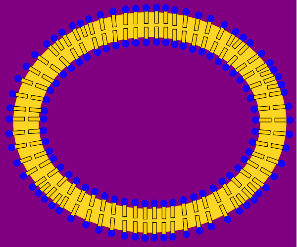
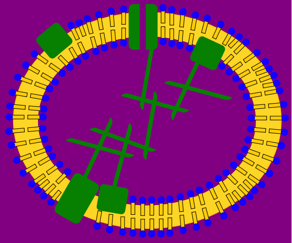

Eine Zellmembran besteht v.a. aus einer Phospholipid-Doppelschicht.
Ein Phospholipid-Molekül ist ähnlich wie ein Tensid-Molekül aus einer
polaren Kopfgruppe (meist aus Glycerin und einer Phosphatgruppe) sowie
einer unpolaren Schwanzgruppe (z.B. Fettsäurereste) aufgebaut.
Aufgrund des lipophilen Charakters der nach innen gerichteten
Schwanzgruppen stellen Zellmembranen eine Barriere z.B. für Ionen dar
und ermöglichen so einen selektiven Stoffaustausch mit
der Umgebung.
Fettlösliche Moleküle wie z.B. Steroidhormone dagegen können die
Zellmembran und die Kernhülle leicht durchdringen.

Um
(1) einen Stoffaustausch mit der Umgebung auch für polare bzw.
ionische oder aber sehr große Moleküle zu ermöglichen, um
(2) elektrische oder chemische Informationen aus der Umgebung oder
von Nachbarzellen aufzunehmen, oder um
(3) mit Hilfe eines Konzentrationsgefälles einen Stoffwechselteilschritt
anzutreiben,
liegen in diese Membran eingebettet viele verschiedene Proteine
(hier grün dargestellt).
Diese können die Membran vollständig durchdringen oder nur in eine
der beiden Schichten eingebettet sein.
Sie sind meist innen an anderen Proteinen des Zellskeletts verankert.